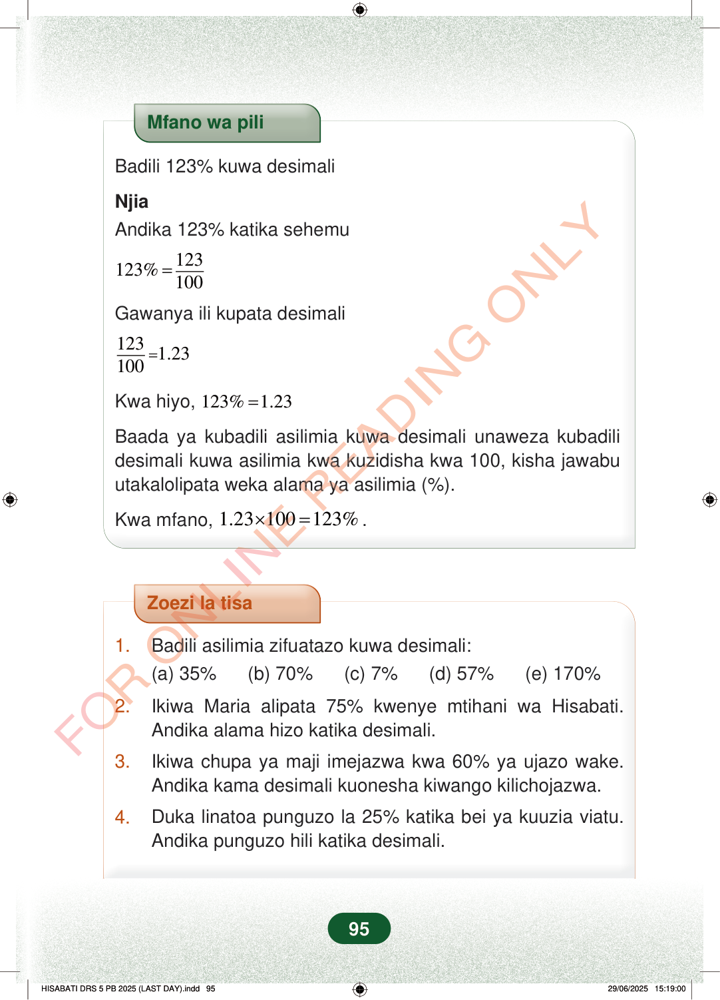

Mfano wa piliBadili 123% kuwa desimaliNjiaAndika 123% katika sehemu123123%100=Gawanya ili kupata desimali1231.23100=Kwa hiyo,123%1.23=Baada ya kubadili asilimia kuwa desimali unaweza kubadilidesimali kuwa asilimia kwa kuzidisha kwa 100, kisha jawabuutakalolipata weka alama ya asilimia (%).Kwa mfano,1.23100123%×=.Zoezi la tisa1.Badili asilimia zifuatazo kuwa desimali:(a) 35% (b) 70% (c) 7% (d) 57% (e) 170%2.Ikiwa Maria alipata 75% kwenye mtihani wa Hisabati.Andika alama hizo katika desimali.3.Ikiwa chupa ya maji imejazwa kwa 60% ya ujazo wake.Andika kama desimali kuonesha kiwango kilichojazwa.4.Duka linatoa punguzo la 25% katika bei ya kuuzia viatu.Andika punguzo hili katika desimali.95
Mfano wa pili
Badili 123% kuwa desimali
Njia Andika 123% katika sehemu
123 123% 100 =
Gawanya ili kupata desimali
123 1.23 100 =
Kwa hiyo, 123% 1.23 =
Baada ya kubadili asilimia kuwa desimali unaweza kubadili desimali kuwa asilimia kwa kuzidisha kwa 100, kisha jawabu utakalolipata weka alama ya asilimia (%).
Kwa mfano, 1.23 100 123% × = .
Zoezi la tisa
1. Badili asilimia zifuatazo kuwa desimali: (a) 35% (b) 70% (c) 7% (d) 57% (e) 170%
2. Ikiwa Maria alipata 75% kwenye mtihani wa Hisabati. Andika alama hizo katika desimali.
3. Ikiwa chupa ya maji imejazwa kwa 60% ya ujazo wake. Andika kama desimali kuonesha kiwango kilichojazwa.
4. Duka linatoa punguzo la 25% katika bei ya kuuzia viatu. Andika punguzo hili katika desimali.
95
Mfano wa pili unaonyesha jinsi ya kubadili 123% kuwa desimali. Inaandika 123% = 123/100 = 1.23, na pia inaonyesha kuwa 1.23 × 100 = 123%.Mfano wa piliBadili 123% kuwa desimaliNjiaAndika 123% katika sehemu<math><mrow><mn>123</mn><mi>%</mi><mo>=</mo><mfrac><mn>123</mn><mn>100</mn></mfrac></mrow></math>Gawanya ili kupata desimali<math><mrow><mfrac><mn>123</mn><mn>100</mn></mfrac><mo>=</mo><mn>1.23</mn></mrow></math>Kwa hiyo,\ 123\% = 1.23Baada ya kubadili asilimia kuwa desimali unaweza kubadili desimali kuwa asilimia kwa kuzidisha kwa 100, kisha jawabu utakalo lipata weka alama ya asilimia (%).<math><mrow><mi>K</mi><mi>w</mi><mi>a</mi><mi>m</mi><mi>f</mi><mi>a</mi><mi>n</mi><mi>o</mi><mo separator="true">,</mo><mtext> </mtext><mn>1.23</mn><mo>×</mo><mn>100</mn><mo>=</mo><mn>123</mn><mi>%</mi><mi>.</mi></mrow></math>Zoezi la tisa lina maswali ya kubadili asilimia kuwa desimali. Lina mifano kama 35%, 70%, 7%, 57%, 170%, alama ya Maria 75%, ujazo wa chupa ya maji 60%, na punguzo la duka 25%.Zoezi la tisa1.Badili asilimia zifuatazo kuwa desimali:(a) 35%(b) 70%(c) 7%(d) 57%(e) 170%2.Ikiwa Maria alipata 75% kwenye mtihani wa Hisabati.Andika alama hizo katika desimali.3.Ikiwa chupa ya maji imejazwa kwa 60% ya ujazo wake.Andika kama desimali kuonesha kiwango kilichojazwa.4.Duka linatoa punguzo la 25% katika bei ya kuuzia viatu.Andika punguzo hili katika desimali.